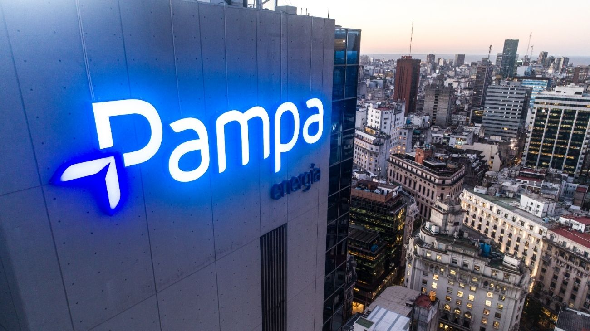

Pampa Energía solicitó el RIGI para Rincón de Aranda: una inversión de más de US$4.500 millones que potencia Vaca Muerta
La empresa Pampa Energía pidió adherirse al RIGI para desarrollar el upstream de su yacimiento Rincón de Aranda, en Vaca Muerta. El proyecto contempla más de US$4.500 millones en inversiones para producción de petróleo, plantas de tratamiento, oleoductos y gasoductos, y podría sumar más de 100 pozos adicionales al área.

Argentina sigue sumando fichas en su tablero energético. Pampa Energía, una de las principales compañías del sector energético en el país, solicitó formalmente adherirse al RIGI —el Régimen de Incentivo para Grandes Inversiones aprobado durante la gestión de Milei— para desarrollar el upstream de su yacimiento Rincón de Aranda, ubicado en la formación de Vaca Muerta. La novedad fue celebrada públicamente por el ministro de Economía, Luis Caputo, quien reposteó el anuncio en sus redes sociales, una señal clara del respaldo político que tiene este tipo de iniciativas desde el Gobierno nacional.
Para quienes no están familiarizados con los términos técnicos: el "upstream" es la etapa inicial de la cadena petrolera, es decir, la exploración y extracción del crudo directamente del yacimiento. El RIGI, por su parte, es un régimen especial que ofrece beneficios impositivos, aduaneros y cambiarios a proyectos de inversión que superen cierto umbral de magnitud, con el objetivo de atraer capital privado —tanto nacional como extranjero— hacia sectores estratégicos de la economía argentina. En pocas palabras, es un incentivo concreto para que las empresas apuesten fuerte por el país.
Y la apuesta de Pampa Energía es, efectivamente, muy grande. El proyecto contempla una inversión estimada de más de US$4.500 millones destinados a la producción de petróleo en el área, junto con la construcción de plantas de tratamiento, oleoductos y gasoductos. Además, la aplicación del RIGI permitiría viabilizar la zona norte del bloque, lo que implicaría sumar más de 100 pozos adicionales, acelerar el ritmo de crecimiento de la producción y prolongar el período de plateau —es decir, la etapa en que la producción se mantiene en su nivel máximo—, que podría incluso superar el diseño original del proyecto. En términos simples: más pozos, más petróleo, por más tiempo.
La noticia se enmarca en un momento de fuerte dinamismo para el sector energético argentino. Hace apenas días, Southern Energy firmaba el mayor contrato de exportación de GNL de la historia del país con Europa, y ahora Pampa Energía suma otro proyecto de escala histórica en Vaca Muerta. El RIGI, que el presidente Milei destacó en su discurso de apertura de sesiones con proyectos ya en marcha por US$25.000 millones, parece estar cumpliendo su función de ancla para atraer inversiones de largo plazo. Para Argentina, cada nuevo proyecto de esta magnitud representa no solo empleo y actividad económica, sino también —y quizás más importante— una fuente genuina de dólares que el país necesita para consolidar su estabilidad macroeconómica.